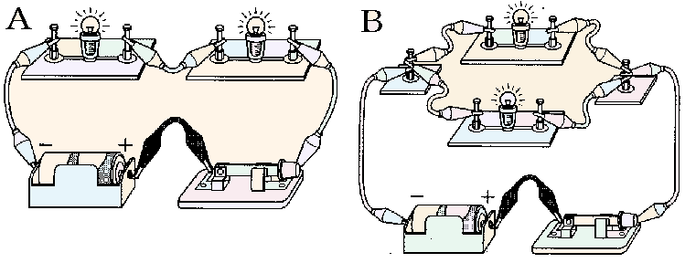
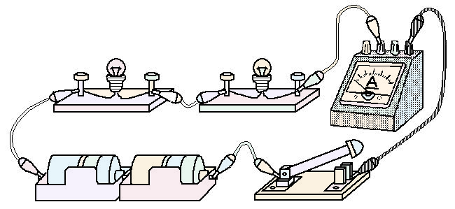
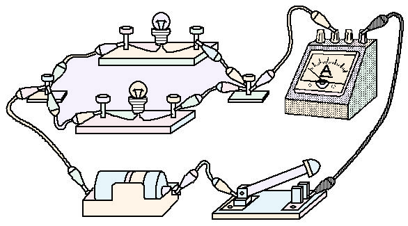

1電流と回路・電気用図記号
📖 江原予備校テキスト 練習より
電流の向き・導体・不導体と、電気用図記号を確認します。
✏️ 練習1:電流と回路・電気用図記号(全4問)
問1電流の方向は、電源の(①)極から流れ出ると決められている。①にあてはまるものはどれか。
正解はイ。電流は電池の＋極から流れ出ると決められています。
問2電流が流れるひとまわりの道筋を(②)という。②にあてはまるものはどれか。
正解はエ。電流が流れる道筋を回路といいます。
問3電流が流れる金属などを(③)という。③にあてはまるものはどれか。
正解はア。電流が流れるものを導体といいます。
問4電流が流れない(流れにくい)ガラスやゴムなどを(④)という。④にあてはまるものはどれか。
正解はウ。電流が流れないものを不導体(絶縁体)といいます。
①
②
③
次の①〜③の電気用図記号
✏️ 練習1(続き):電気器具を表す記号(全6問)
問5①の電気用図記号は、どの電気器具を表しているか。
正解はウ。①は電池です。長い線が＋極、短い線が−極です。
問6②の電気用図記号は、どの電気器具を表しているか。
正解はア。②はⒶなので電流計です。
問7③の電気用図記号は、どの電気器具を表しているか。
正解はエ。③はスイッチです。
問8豆電球の電気用図記号はどれか。
正解はイ。豆電球は、○の中に×を書いた記号です。
問9電圧計の電気用図記号はどれか。
正解はア。電圧計はⓋで表します。
問10抵抗の電気用図記号はどれか。
正解はウ。抵抗は四角(□)で表します。
2回路図と直列・並列
📖 江原予備校テキスト 練習より
1個の乾電池に2個の豆電球と1個のスイッチをつないだ回路で、直列と並列のちがいを確認します。

1個の乾電池に2個の豆電球と1個のスイッチをつないだ回路(A・B)
✏️ 練習2:豆電球のつなぎ方(全3問)
問1Bのような回路を何というか。
正解はイ。道すじが2本に分かれているBは並列回路です(Aは直列回路)。
問2Aの回路を電気用図記号でかいた回路図はどれか。
正解はエ。Aは豆電球2個とスイッチ・電池が1本の道すじにつながった直列回路です。
問3Bの回路を電気用図記号でかいた回路図はどれか。
正解はエ。Bは豆電球2個が並列につながり、電池とスイッチが共通の道すじにあります。
Aの回路図(直列)
Bの回路図(並列)
✏️ 練習2(続き):豆電球をはずすと(全3問)
問4Aの回路で、スイッチを入れたまま電球Pをソケットからはずすと、電球Qはどうなるか。
正解はイ。直列回路なので、Pをはずすと道すじが切れ、Qも消えます。
問5Bの回路で、スイッチを入れたまま電球Rをソケットからはずすと、電球Sはどうなるか。
正解はウ。並列回路なので、Sの道すじには電流が流れつづけ、明るさは変わりません。
問6問5(Sの明るさが変わらない)のは、どうしてか。
正解はア。並列つなぎなので、R・Sには電池と同じ電圧がかかっています。Rをはずしても、Sにかかる電圧は変わりません。
3実物の回路を回路図にしよう
📖 江原予備校テキスト 練習より
実際の配線(実物)を回路図に直す練習です。

(1)の配線図(Aは左の豆電球、Bは右の豆電球)
✏️ 例題(1):直列回路(全2問)
問1(1)の配線図を、電気用図記号を使った回路図で表したものはどれか。
正解はイ。豆電球2個・電流計・電池2個・スイッチがすべて1本の道すじ(直列)につながっています。電流計は回路に直列につなぎます。
問2(1)の回路で、スイッチを入れてAの豆電球をゆるめると、Bの豆電球は消える。
○ 直列回路なので、Aをゆるめると電流が流れなくなり、Bも消えます。

(2)の配線図(Aは上の豆電球、Bは下の豆電球)
✏️ 例題(2):並列回路(全2問)
問3(2)の配線図を、電気用図記号を使った回路図で表したものはどれか。
正解はエ。豆電球2個が並列につながり、電流計は全体の電流が通る道すじに直列につながっています。
問4(2)の回路で、スイッチを入れてAの豆電球をゆるめると、Bの豆電球は消える。
× 並列回路なので、Bの道すじには電流が流れつづけます。電圧は変わらないので、Bの明るさにも変化はありません。